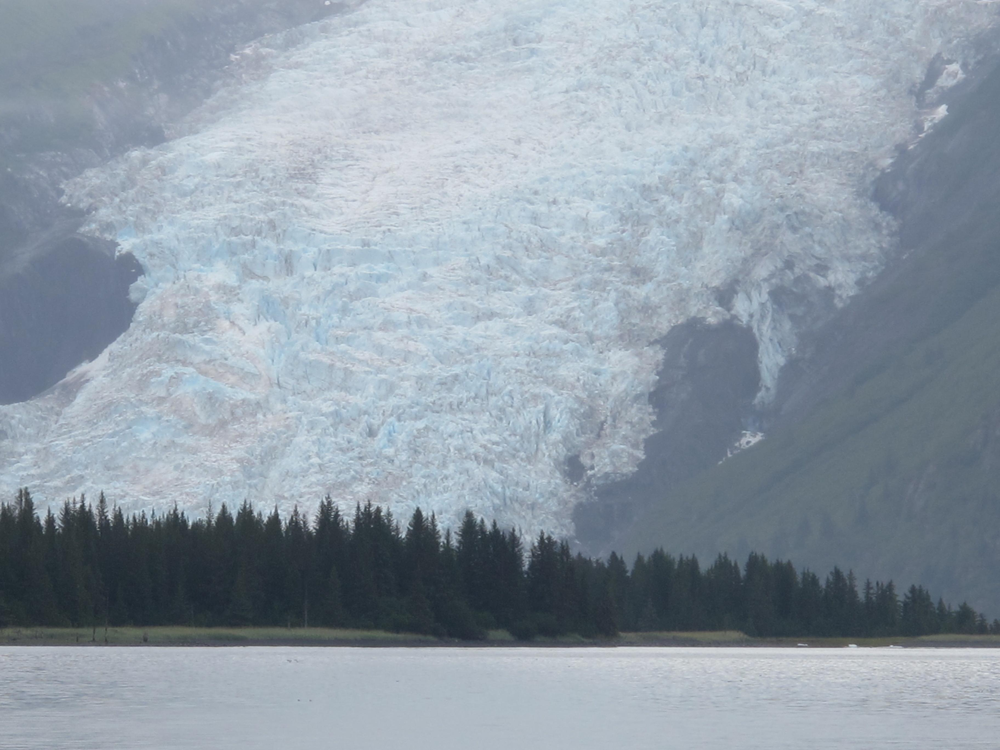

Anchorage, Alaska Travel Guide
Anchorage Weather
The average temperature in the summer is between 60-75 degrees Fahrenheit.
The average temperature in the winter is between 5-30 degrees Fahrenheit.
The average annual snowfall amount is 75.5 inches.
The average amount of sunlight hours on a summer day is about 19 hours.
The average amount of sunlight hours on a winter day is a little over 6 hours.

Places to Visit in Anchorage
Alaska Native Heritage Center
Alaska Zoo
Anchorage Museum
Portage Glacier
Alyeska Ski Area

Cost of Traveling
Average cost of Plane Ticket to Anchorage = $525
Average cost of Plane Ticket leaving Anchorage = $475
Average daily cost per person = $195